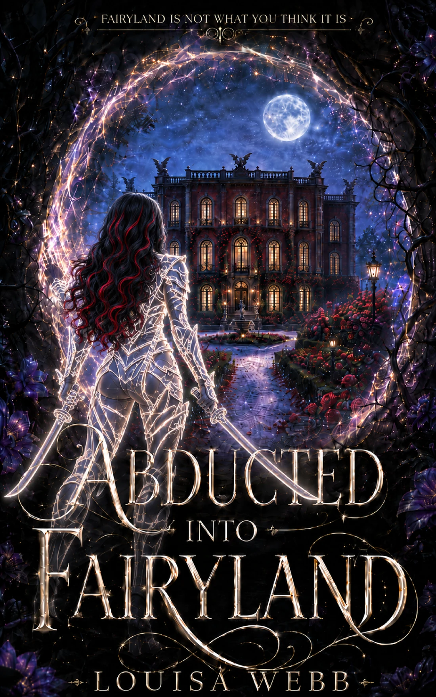

THE FAIRYLAND ARCHIVES
History leaves its mark
Explore Fairyland’s history and timelines, its places and landmarks, and the organisations that shape every realm.
LOUISA WEBB
This website is intended for adults aged 18 and over.
Louisa Webb writes dark fantasy romance containing mature themes, explicit sexual content, violence and other potentially disturbing material.
By entering this website, you confirm that you are 18 years of age or older.
Age confirmation is remembered only on this device. No advertising or analytics cookies are used in this preview.
There is a reason why roses have thorns!
Dark portal romantasy for mature readers: dangerous magic, monstrous politics, fierce women, complicated bonds and a Fairyland that never learned to behave.
18+ • DARK FANTASY ROMANCE • WHY CHOOSE
BOOK ONE
Sometimes getting kidnapped is only the beginning.

Franziska expected a quiet Christmas weekend involving wine, a bath and a Shibari course. Instead, she is abducted from Earth, drugged, stripped and thrown into a locked cell with an imprisoned Incubus Emperor whose magic has been drained almost to nothing.
Then Damian gives her magical powers. Fairyland is real, the monsters are not necessarily the villains, and Franzi is about to discover that rescue is only the first problem.
“Here there be monsters.”
BEAUTIFUL. POLITICAL. DANGEROUS.
A world of complicated loyalties, ancient power and histories that refuse to stay buried.
SERIES & CANON
Every book deepens the same living world, where bonds, choices and old promises carry forward.
Explore the seriesCHARACTERS & ALLIANCES
Emperors, captives, rivals and found family collide in relationships built on power, desire and trust.
Meet the charactersREALMS & POLITICS
Fairyland is divided by realms, houses, courts and clans—each with its own loyalties and ambitions.
Explore the realmsTHE FAIRYLAND ARCHIVES
Explore Fairyland’s history and timelines, its places and landmarks, and the organisations that shape every realm.
THE SERIES
One world. A growing web of bonds, crowns, monsters and consequences.
BOOK ONE
Franzi enters Fairyland. Fairyland may regret it.
ARC / UpcomingBOOK TWO
The bonds deepen. The forest is watching.
In developmentBOOK THREE
Power has a price. Crowns have teeth.
In developmentMORE TO COME
Future titles will be revealed as the series grows.
ADVANCE READER COPIES
Apply to join the ARC team for Abducted into Fairyland. The application includes the full mature-content information before you continue.
READ BEFORE ENTERING
Abducted into Fairyland is written for mature readers.
This is an adult dark portal romantasy novel intended for mature readers. It contains graphic violence, blood, gore, torture, mutilation, body horror, dismemberment, decapitation, executions, revenge torture, imprisonment, abduction, forced nudity, drugging, poisoning, magical coercion, energy harvesting, slavery/captivity, addiction and withdrawal, trauma, suicidal ideation, genocide, and death.
It also contains explicit consensual sexual content, casual sex, bondage, rough sex, why-choose/polyamorous dynamics, incestuous or pseudo-incestuous relationship structures, sexual assault, rape, abusive/nonconsensual sex, sexual torture, orgasm denial, sexual trauma, and references to sexual violence against adults, children/infants, and non-human/sentient beings.
This book includes harm to infants, infant death/murder, and disturbing aftermath scenes involving infants.
Here there be monsters.
ABOUT THE AUTHOR
Louisa Webb writes dark fantasy romance in which Fairyland is beautiful, dangerous, politically inconvenient and full of people who should probably not be trusted.
Her series centres on an adult heroine, complicated relationships, found family, power, humour in terrible situations, and a world where monsters are rarely as simple as they first appear.
Half German and half English, Louisa is in her fifties and spent years working as a purchasing manager—just like her heroine. She lives in Germany with her twins and has a fondness for red wine, coffee, tea and sweets.
A lifelong devourer of books, Louisa was happily reading other people’s stories until Franzi appeared in her head and demanded that her own story be told.